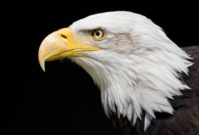
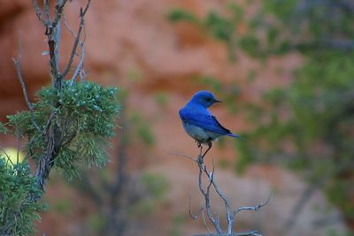
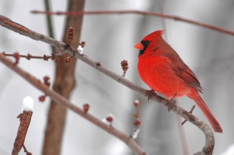

Favorite Backyard Birds
Here are some favorite birds commonly admired by birdwatchers in Utah. Each one brings its own beauty, colors, and personality to backyard birdwatching.
American Goldfinch

The American Goldfinch is loved for its bright yellow coloring and cheerful activity. It is often seen visiting feeders and adds a flash of color to any backyard setting.
Bald Eagle

The Bald Eagle is one of the most majestic birds associated with the American West. Bird lovers enjoy spotting this powerful raptor soaring high above lakes and open land.
Blue Bird

Blue birds are admired for their soft blue coloring and calm beauty. They are a favorite among photographers and backyard birdwatchers alike.
Cardinal

Cardinals stand out because of their bold red feathers and distinctive crest. They are easy to recognize and are often one of the most memorable birds visitors see.